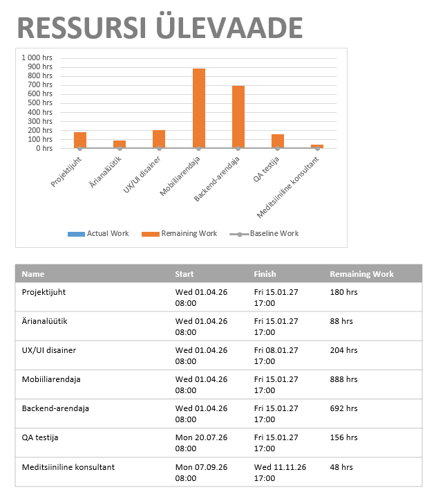

Mis on diagrammid MS Project?
Diagrammid MS Projectis on visuaalsed tööriistad projektide planeerimiseks ja jälgimiseks, kuvades ülesandeid, sõltuvusi ja edenemist erinevates diagrammides.
1. Diagrammide lehe avamiseks tuleb minna vahekaardile „Report“ ja seal on palju erinevaid diagrammiliike, mis vastavad sinu projekti kindlatele omadustele

2. Näitena avame hinnadiagrammi, mis asub vahekaardil „Dashboards“. Siin kuvatakse kogu teave sinu projekti hindade ja kulude kohta.

3. Kui klõpsata konkreetsele graafikule/diagrammile, saame selle välju muuta ja määrata, mida see sisaldab

4. Saame muuta diagrammi teemat ja värve vahekaardil „Chart Design“ ning samuti muuta pealkirjade ja kirjelduste teksti

5. Nüüd vaatame teist diagrammi, mis asub vahekaardil „Resources“ ja kannab pealkirja „Resources Overview“. See näitab teie projekti kasutatud ressursse ning sisaldab diagrammi, mis kajastab kõigi töötajate töötunde, samuti tabelit, kus on näidatud konkreetse töötaja järelejäänud aeg ning töö algus- ja lõppkellaaeg.
